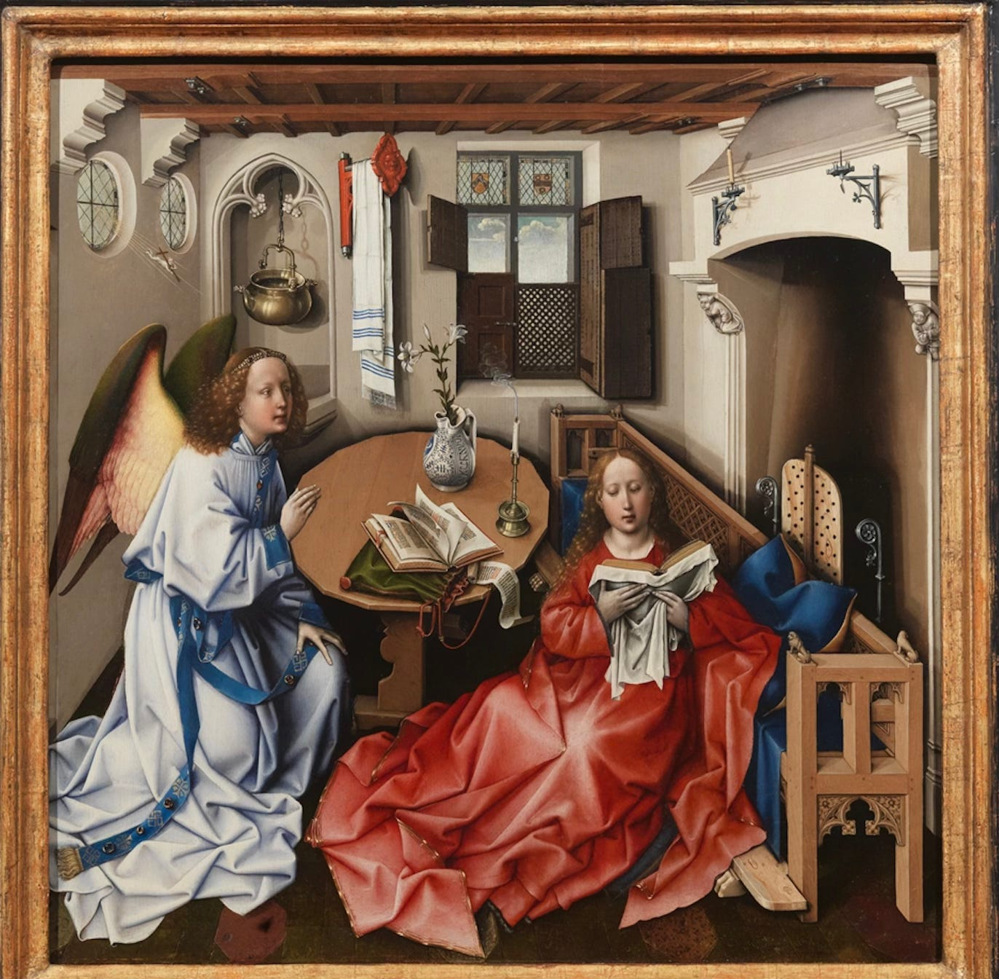

The Renaissance was a fervent period of European cultural, artistic, political and economic “rebirth” following the Middle Ages. Generally described as taking place from the 14th century to the 17th century, the Renaissance promoted the rediscovery of classical philosophy, literature and art. Some of the greatest thinkers, authors, statesmen, scientists and artists in human history thrived during this era, while global exploration opened up new lands and cultures to European commerce. The Renaissance is credited with bridging the gap between the Middle Ages and modern-day civilization